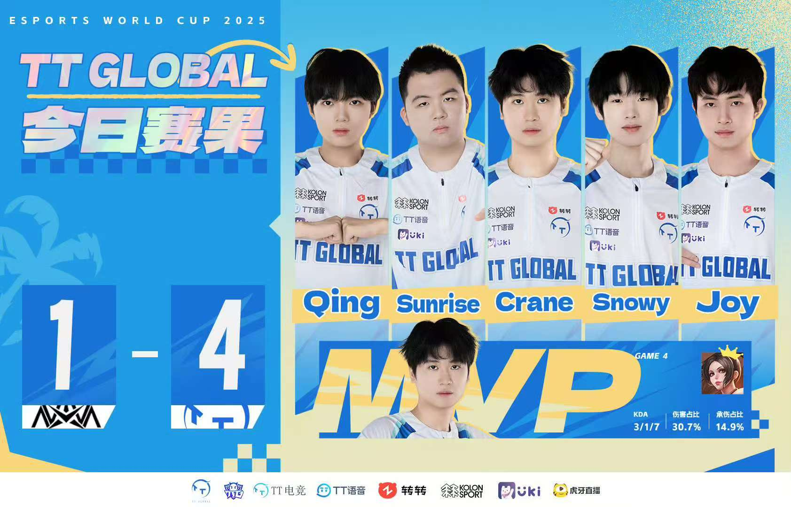

赛事回顾
2025王者荣耀电竞世界杯（2025 KWC）于7月15日至26日在沙特阿拉伯利雅得燃情开赛，作为KPL赛区代表的广州TTG，以TT Global的名字，肩负着亚洲冠军的荣光出征全球赛场。 面对来自菲律宾、印度尼西亚等全球18支顶尖战队的挑战，他们展现出极强的适应能力与统治力,以碾压的姿态一路过关斩将，最终与成都AG超玩会（AG.AL）会师7月26日的总决赛舞台。 决赛场上，双方比分拉满悬念，更是鏖战七局到深夜，再一次进入巅峰对决，TTG队员们在胶着战局中敢打敢拼，多次打出极限团战与战术拉扯，但最终还是以3:4憾负对手，斩获赛事亚军，用实力为中国赛区赢得荣誉。
关键数据
- 总比分: TT Global VS AG.AL 3:4
- 首发阵容：
对抗路：Qing（吴金翔）
打野：Sunrise（李佳旭）
中路：Crane（江利杰）
发育路：Snowy（岳彩营）
辅助：Joy（邹伟鑫） - FMVP：AG.Zoe
舆论反馈
作为ACL冠军得主的广州TTG，被无数粉丝寄予厚望，从亚洲之巅到世界赛场，大家期待他们能在300万美元巨额奖金池的顶级赛事中再创辉煌，让世界看到中国战队的实力。 失利结果公布后，惋惜之余满是认可与敬意。粉丝们共情队员们在全球舞台上的全力以赴，肯定他们在跨赛区对抗中的出色表现。 即便留有遗憾，粉丝们的支持依旧坚定滚烫。大家坚信这支历经亚洲冠军与世界大赛淬炼的队伍，能吸收经验、砥砺前行，在未来的国际赛场续写属于广州TTG的荣耀篇章。
返回荣誉合集